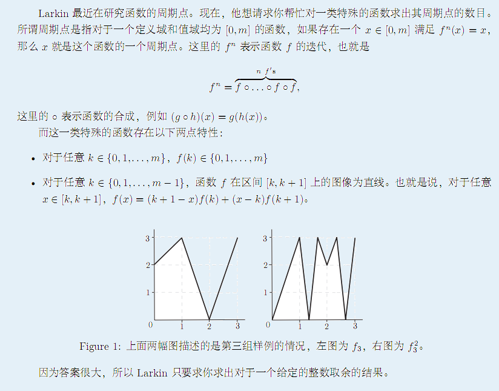
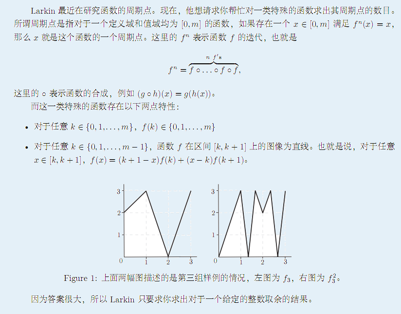

| F.A.Qs | Home | Discuss | ProblemSet | Status | Ranklist | Contest | 入门OJ | ModifyUser Xeonacid | Logout | 捐赠本站 |
|---|
| F.A.Qs | Home | Discuss | ProblemSet | Status | Ranklist | Contest | 入门OJ | ModifyUser Xeonacid | Logout | 捐赠本站 |
|---|

由多组数据组成。每一组数据的第一行包含一个整数 m。接下来的一行描述函数 f 的情况，这一行包含 m +1 个整数 f(0),f(1)......f(m)，均介于 0 到 m 之间。每一组数据的最后一行包含两个整数，n 和用来取余的整数 mod。
对于每一组输入数据输出一个答案，表示这个函数的周期点的个数对于
mod 取余的值。如果答案为无穷大则输出 Infinity。
对于 100% 的数据，1 <= m <= 80; 1<= n <= 5000; 1<= mod<= 10000，数据组数不多于 10 组。